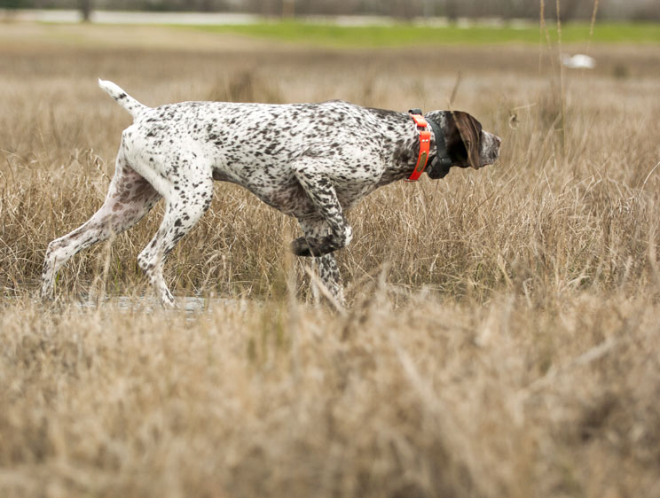

¿Qué es la Caza de Muestra?
La caza de muestra es un tipo de caza en la que se emplea a perros especializados para localizar aves o pequeños animales y luego "marcar" o "mostrar" su ubicación al cazador. El perro, tras encontrar la caza, se queda inmóvil (en “muestra”) señalando su ubicación, lo que le permite al cazador acercarse sin que el animal se percate de la presencia humana.
Tipos de Animales en la Caza de Muestra
- Perdices: Las perdices son uno de los animales más comunes en la caza de muestra. Son pequeñas aves que suelen habitar en campos abiertos y matorrales.
- Codornices: Al igual que las perdices, las codornices son un objetivo frecuente en esta modalidad de caza, especialmente en áreas con cultivos y hierbas altas.
- Faisanes: Los faisanes, aunque más grandes, también se cazan con la técnica de la muestra. Son muy populares en zonas rurales y boscosas.
- Aves migratorias: Durante las temporadas de migración, algunas aves como la tórtola o el patirrojo pueden ser cazadas con perros de muestra.
Equipos y Técnicas de la Caza de Muestra
La caza de muestra requiere una combinación de equipos adecuados y la habilidad de los perros. A continuación se presentan algunos de los elementos clave en esta práctica:
- Perros de muestra: Los perros utilizados en esta modalidad son entrenados específicamente para detectar la presencia de aves y mantenerse inmóviles cuando localizan un animal. Algunas razas comunes para la caza de muestra incluyen el Pointer, el Setter y el Braco.
- Escopetas: Al igual que en otras modalidades de caza, se utilizan escopetas de caza para disparar a las aves. Se eligen escopetas de calibres pequeños, ideales para disparar a distancias cortas.
- Ropa adecuada: El cazador debe estar vestido con ropa cómoda y de camuflaje para no asustar a los animales. Las botas resistentes y los chalecos de caza son esenciales para caminar a través de terrenos difíciles.
- Colocación estratégica: El cazador debe estar preparado para tomar una posición estratégica, esperando el momento adecuado para disparar sin alertar al animal ni al perro.
Entrenamiento de los Perros para la Caza de Muestra
El entrenamiento del perro es un aspecto esencial en la caza de muestra. A continuación, se describen los principales métodos utilizados para entrenar a los perros en esta modalidad:
- Entrenamiento en campo abierto: Los perros son entrenados para seguir el rastro de las aves en grandes áreas abiertas, donde el cazador también puede practicar la búsqueda.
- Condicionamiento a la inmovilidad: El perro debe aprender a quedarse completamente quieto cuando encuentra la caza, sin moverse ni ladrar, para no alertar al animal.
- Refuerzo positivo: Se utiliza el refuerzo positivo para premiar al perro cada vez que realiza correctamente la muestra, reforzando su comportamiento.
Normativas y Regulación de la Caza de Muestra
La caza de muestra también está sujeta a regulaciones y normativas para garantizar su práctica ética y sostenible. Las leyes varían según el país o la región, pero en general incluyen:
- Temporadas de caza: Hay períodos específicos en los que se permite la caza de ciertas aves para evitar la sobreexplotación y la protección de especies en peligro.
- Licencias de caza: Los cazadores deben tener una licencia válida para poder realizar la caza de muestra.
- Regulaciones sobre el uso de perros: En algunos lugares, se regulan los métodos de entrenamiento y el tipo de perros que pueden ser utilizados en esta modalidad.